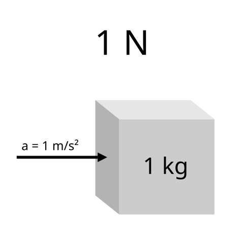
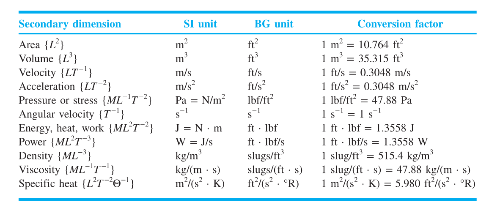

Dimensions are used to quantify physical variables
A unit is a way to assign a magnitude to each dimension
The fundamental dimensions include:
Mass \(\{M\}\)
Length \(\{L\}\)
Time \(\{T\}\)
Temperature \(\{\Theta\}\)
All other variables can be expressed in terms of those dimensions
\[F = m a\]
\[\{F\} = \{MLT^{-2}\}\]
Unit systems
International System of Units (SI)
British Gravitational System (BG)
Units are defined in terms of the basic units

SI has numerical base of 10
Dimension
Unit
Length
meter (m)
Mass
kilogram (kg)
Time
seconds (s)
Temperature
kelvin (K)
Multiple
Prefix
109
giga
106
mega
103
kilo
102
hecto
101
deka
10-1
deci
10-2
centi
10-3
milli
10-6
micro
10-9
nano
Secondary dimensions

Dimensional homogeneity
Let's use the example of the Bernoulli equation
\[p_0 = p + \dfrac{1}{2} \rho V^2 + \rho g Z\]
where \(p\) are pressures, \(V\) is velocity, \(\rho\) is density, \(g\) is gravity acceleration, and \(Z\) is altitude.
A body weighs \(1000\mathrm{lbf}\) at earth gravity \(g=32.174\mathrm{ft/s^2}\). What will the weight of this body be in N if it is exposed to the moon’s standard acceleration \(g_m = 1.62\mathrm{m/s^2}\)
In 1890 Robert Manning proposed the following empirical formula for the average velocity \(V\) in uniform flow due to gravity down an open channel
\[V = \dfrac{1.49}{n} R^{2/3} S^{1/2}\]
\(n\) is roughness factor (dimensionless)
\(S\) is slope (tangent of angle between bottom and horizontal)
\(R\) is hydraulic radius (flow area divided by wetted perimeter)
Quiz!
Solution
\[V=\dfrac{1.49}{n} R^{2/3} S^{1/2}\]
\[\Rightarrow \{ L T^{-1} \} = \{1.49\} \{1\} \{L^{2/3}\} \{1\}\]
\[\{1.49\} = \{L^{1/3} T^{-1}\}\]
Converting to SI
\[(1.49\mathrm{ft^{1/3}/s})(0.3048\mathrm{m/ft})^{1/3} = 1.00\mathrm{m^{1/3}/s}\]
\[V = \dfrac{1}{n} R^{2/3} S^{1/2}\]
Thermodynamic Properties of a Fluid
Pressure \(p\)
Density \(\rho\)
Temperature \(T\)
Internal energy \(\hat{u}\)
Enthalpy \(h = \hat{u} + p/\rho\)
Entropy \(s\)
Specific heat \(c_p\) and \(c_v\)
Coefficient of viscosity \(\mu\)
Thermal conductivity \(k\)
Pressure
Defined as stress at a point in a static fluid
One of the most dynamic variable in fluid mechanics
The pressure at the deepest part of the ocean is approximately 1100 atm. Estimate the density of seawater at this pressure, if surface density is 1020 kg/m3.